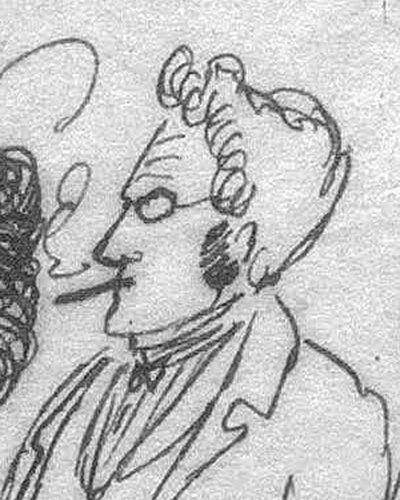

Ideologies / Anarchist
What is Egoist Anarchism?
Egoist Anarchism is a political ideology in the Anarchist family. It treats the state, the nation, morality, religion and even humanity as fixed ideas that people serve against their own interest. The individual owes nothing to any of them. Stirner proposed a union of egoists: free association that lasts only as long as it serves each member. This is the root of later post left anarchism.
No god, no state, no cause above the individual.
Defined from: Max Stirner, The Ego and Its Own (1844)
See how close you are to Egoist Anarchism Dare a friend to answer as one

-1.1_V01-1.2_raw_RGASPI_(Stirner_crop).jpg){kind=link}
Where Egoist Anarchism stands on 13 axes
Each axis runs from 0 to 100. A score of 50 is the middle. On a classic compass it sits in the Libertarian Right quadrant.
| Axis | Position | Score | In words |
|---|---|---|---|
| EconomyMarket to Planned | 30 | Strongly Market | |
| OwnershipPrivate to Collective | 40 | Leans Private | |
| RightsLiberty to Security | 0 | Very strongly Liberty | |
| GovernmentDemocracy to Autocracy | 0 | Very strongly Democracy | |
| StructureDecentralised to Centralised | 0 | Very strongly Decentralised | |
| NationInternationalist to Nationalist | 0 | Very strongly Internationalist | |
| ImmigrationMulticulturalist to Assimilationist | 30 | Strongly Multiculturalist | |
| ValuesProgressive to Traditional | 5 | Very strongly Progressive | |
| TechnologyAccelerationist to Precautionary | 50 | Balanced | |
| EnvironmentIndustrialist to Environmentalist | 50 | Balanced | |
| ReligionSecular to Religious | 0 | Very strongly Secular | |
| MilitaryPacifist to Militarist | 30 | Strongly Pacifist | |
| TradeFree Trade to Protectionist | 25 | Strongly Free Trade |
Ideologies closest to Egoist Anarchism
- Individualist Anarchism86% alike
- Post Left Anarchism86% alike
- Philosophical Anarchism83% alike
- Pirate Politics83% alike
- Left Libertarianism82% alike
Its opposite on this map is Juche, at 11%.
Parties near Egoist Anarchism
- Students for a Democratic SocietyUnited States. The Port Huron Statement (1962)79% alike
- Paris CommuneFrance. Declaration to the French People (1871)78% alike
- People's Party of ThailandThailand. Blueprint to Transform Thailand (2026)78% alike
- Citizens' MovementMexico. Plataforma Electoral 2024 to 2030 (2024)78% alike
Common questions
What is Egoist Anarchism?
Egoist Anarchism is a political ideology in the Anarchist family. It treats the state, the nation, morality, religion and even humanity as fixed ideas that people serve against their own interest. The individual owes nothing to any of them. Stirner proposed a union of egoists: free association that lasts only as long as it serves each member. This is the root of later post left anarchism.
What does Egoist Anarchism believe?
In one line: No god, no state, no cause above the individual. Its strongest positions are Liberty, Democracy, Decentralised. It treats the state, the nation, morality, religion and even humanity as fixed ideas that people serve against their own interest. The individual owes nothing to any of them. Stirner proposed a union of egoists: free association that lasts only as long as it serves each member. This is the root of later post left anarchism.
Who founded Egoist Anarchism?
Egoist Anarchism is defined here from The Ego and Its Own (1844) by Max Stirner. The thinker most tied to it is Max Stirner (1806 to 1856).
Is Egoist Anarchism left wing or right wing?
On a classic two axis compass Egoist Anarchism falls in the Libertarian Right quadrant, which means the economic right and the libertarian side. Left and right hide a lot, though, which is why EthosScales scores it on thirteen separate axes.
How is Egoist Anarchism different from Individualist Anarchism?
They are close, at a 86% match. The biggest gaps are on Economy, where Egoist Anarchism scores 30 and Individualist Anarchism scores 0, and Values, where Egoist Anarchism scores 5 and Individualist Anarchism scores 20. On each axis, 0 is one end and 100 is the other.
Think this is wrong? Suggest a correction. The scores are editorial estimates.